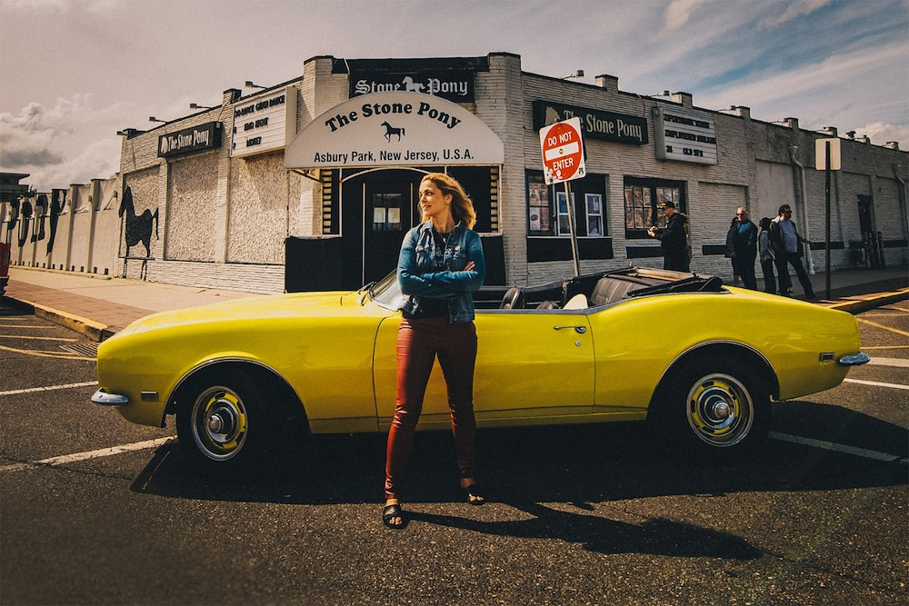

Hon har varit ett fan i fyrtio år och nu delar hon kärleken till sin musikaliska hjälte via hyllningskonserten GREETINGS FROM SWEDEN. Tillsammans med den svenska musikern och artisten Alexandra Jardvall får vi uppleva Bruce Springsteen – den ständigt turnerande världsstjärnan – utifrån hennes perspektiv.
Hon har förtjänstfullt fått titeln "en av världens bästa kvinnliga Bruce-tolkare" och nu har Alexandra Jardvall satt ihop ett band av mästerliga musiker som hon kallar för The SWE Street Band. Tillsammans har de valt ut ett antal av hennes absoluta favoritlåtar och åker på turné med den konsertshowen som sålde ut Flygeln i Norrköping i fjol.
Publiken kan förvänta sig en kväll med kända och mindre välkända låtar signerade Bruce Springsteen. Alexandras tolkningar, hennes personliga och känslofyllda upplevelser, humoristiska och dråpliga historier som frambringar både skratt och tårar.
Det blir en hjärtlig 90-minuters hyllning till den legendariske rockartisten, där inte ens den mest hårdnackade Springsteen-skeptikern kan stå emot.
Boendepaket: Välkomstfika · Fördrink · Trerättersmiddag med show · Övernattning · Frukostbuffé
Bokning: boka.klockargarden.com eller ring 0247-502 60
Boendepaket eller konsertpaket med möjlighet till middag direkt på hotellet.
Bordsbokning med middag: 019-670 67 07
Konsert med eller utan mat. Som extra gäst medverkar Springsteen-fotografen Jan M. Lundahl med utställning och fotobok på plats – ett unikt tillfälle att förvärva ett fint minne.

Alexandra Jardvall är precis hemkommen från sin femte resa till den musikaliska huvudstaden Asbury Park, där hon lyckats skapa sig ett namn. Barndomsdrömmen om att få uppträda där infriades 2022 då hon gjorde en bejublad konsert till förmån för den amerikanska Endometriosfonden – The Endo Warrior Benefit Show.
Hon har deltagit i American Music Honors samt tolkat Bruce Springsteens musik i den amerikanska dokumentären Tramps Like Us. Som Springsteen-tolkare har publiken i Holland, Finland, Norge, Danmark och Italien fått uppleva hennes musikalitet.
Tillsammans med gitarrist Richard Hauer skapade hon In The Spirit of Springsteen: The Live Sessions, Vol. 1 – finns att lyssna på hos Spotify.
Richard Hauer är en Göteborgsbasserad gitarrist och musiker med ett brett register – från jazz och klassiskt till rock och fusion. Som kapellmästare för The SWE Street Band ansvarar han för arrangörskap, instudering och musikalisk ledning under turnéerna med Alexandra Jardvall.
Med över tjugo års erfarenhet från scen – Göteborgsoperan, Princess Cruises och ett flertal egna projekt – är Richard en av Västra Götalands mest mångsidiga gitarrister.
För frågor om showen, pressförfrågningar eller bokning av Alexandra Jardvall & The SWE Street Band – kontakta Livescen Scandinavia.